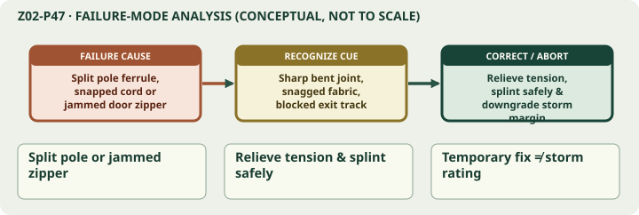

Z02-P47 · Shelter and housing · New manuscript
Diagnose pole splintering, hub failure and zipper jams in field weather
Stabilize minor mechanical shelter breakdowns cleanly without creating sharp-edge tears or trapping occupants inside.
When it applies · Field troubleshooting of damaged tent poles, hubs, grommets and stuck door zippers.
Equipment · Pole repair splint sleeve, cloth or gear tape, spare guyline cord and headlamp.

Actions
- If a tent pole cracks or splits, relieve fabric tension first, slide the manufacturer splint sleeve centered over the break and tape ends snugly—wear eye/hand caution around splintered carbon or fiberglass.[E20, E02, ED]
- If a door zipper jams on draft-flap fabric, stop pulling aggressively; back the slider slowly while easing trapped fabric clear, and keep a secondary exit or toggle closure usable.[E20, ED]
- Recognize that field splints and tape patches are temporary stabilization aids—they do NOT restore full storm strength to a fractured frame.[E20, E16, ED]
Failure recognition · Yanking a snagged rainfly zipper until the slider rips off the track in freezing rain, or leaving a jagged broken pole punching through the canopy.[E20, E02, ED]
Verify · Confirm splinted pole joints hold smoothly without puncturing fabric and that at least one exit opens reliably from inside in the dark.[E20, ED]
Stop or change course · If main structural hubs fail, multiple poles snap or weather exceeds your temporarily stabilized shelter, end the overnight stay and relocate to safer refuge.[E20, E16, E05]
Evidence and editorial notes
- E02 · NPS · Ten Essentials (current web edition)
- Section: Navigation; insulation; emergency shelter; emergency food and water · Conditions: Outdoor trips; adjust kit to season and route
Support: Carry essential systems including navigation, insulation, light, water and emergency shelter.
Limitations: Carrying items without practice or cold-weather verification does not ensure readiness. · Conflicting evidence: None; baseline kit system architecture.
Editorial note: Supports failure-mode packing and kit verification cards. · Specialist reviewer: Field education and search and rescue
Primary source · checked 2026-11-24 - E05 · NWS · What To Do If You're Caught in a Winter Storm (current web edition)
- Section: Outside and find shelter · Conditions: Cold, wet or windy winter conditions
Support: Block wind, stay dry and keep off cold ground. Keep exposure reduction separate from making a fire.
Limitations: Improvised windbreaks do not provide rated thermal protection or snow-load capacity. · Conflicting evidence: None; aligns with CDC-H.
Editorial note: Separates wind, ground, and moisture heat-loss pathways. · Specialist reviewer: Cold-weather shelter specialist
Primary source · checked 2026-11-24 - E16 · NWS · Wind Safety (current web edition)
- Section: Wind Safety > High Wind Hazards · Conditions: Forecast or developing high winds, squalls, or straight-line winds
Support: High winds topple trees, loft debris, and stress lightweight shelters beyond fabric and anchor limits; relocate out of timbered fall zones and into substantial shelter before gusts peak.
Limitations: Tents and tarps lack standardized wind-speed survival guarantees across soil types and pitch angles. · Conflicting evidence: None; avoids unvalidated mph ratings for improvised pitches.
Editorial note: Drives high-wind shelter inspection, guying limits, and abandonment thresholds. · Specialist reviewer: Weather safety and shelter equipment
Primary source · checked 2026-11-24 - E20 · NPS · Camping: What to Bring (current web edition)
- Section: Camping: What to Bring > Shelter and Sleep System · Conditions: Overnight camping across three-season and cool conditions
Support: Match tent/tarp, groundsheet, sleeping pad, and sleeping bag ratings to expected night lows and precipitation; test pitching and inspect poles, zippers, and stakes before departure.
Limitations: Manufacturer comfort ratings assume dry insulation, ground pad use, and adequate caloric intake. · Conflicting evidence: None; reinforces pre-trip inspection and dry-sleep separation.
Editorial note: Anchors manufactured shelter selection, groundsheet fit, and gear readiness. · Specialist reviewer: Shelter equipment and field education
Primary source · checked 2026-11-24
Source lineage · NPS Ten Essentials and camping gear; new manuscript · Classification · New manuscript.